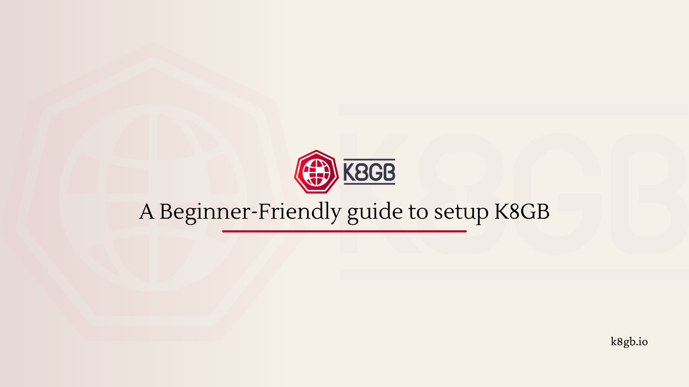

A Beginner-Friendly Guide to k8gb Local Setup¶
When I first started working with k8gb, the local setup took me a while to fully wrap my head around. And I'm a contributor to this project! So if you're new to k8gb and the local setup feels like a lot to take in, trust me — that's completely normal.
The local setup simulates a real multi-cluster, multi-region environment on your laptop. That's genuinely powerful, but it also means there's more moving parts than a typical "run one cluster" tutorial. Once the mental model clicks, everything falls into place.
So I decided to write the walkthrough I wish I had when I was getting started.
A Quick Look at What's Happening Under the Hood¶
Before we get into the actual setup, let me explain what's actually happening. This context makes everything else click.
When you run k8gb locally, you're spinning up three separate clusters:
test-gslb1— your first Kubernetes cluster (tagged aseuregion)test-gslb2— your second Kubernetes cluster (tagged asusregion)edgedns— a special cluster that runs a DNS server (BIND) acting as your "global" DNS
You're simulating a real-world multi-region environment on your laptop. Once you see it that way, the whole setup starts to make sense.
Here's the mental model:
Your Laptop
├── cluster: test-gslb1 (eu region) → runs k8gb + your app
├── cluster: test-gslb2 (us region) → runs k8gb + your app
└── cluster: edgedns → runs BIND DNS server (the "global" DNS)
k8gb on each cluster talks to the edgedns cluster to register which cluster is healthy. When a client asks "where is roundrobin.cloud.example.com?", the DNS server returns IPs from healthy clusters only.
That's the whole idea. Now let's set it up.
What You Actually Need (And Why)¶
The setup requires a few tools. Here's what each one is for so you know what you're installing:
Required — you need these to run the local demo:
| Tool | Why You Need It |
|---|---|
| k3d | The tool that creates and manages your local k3s clusters |
| Docker | k3d creates Kubernetes clusters inside Docker containers |
| kubectl | To interact with your clusters (check pods, apply configs, etc.) |
| helm | To install k8gb and test apps onto the clusters |
| Git | To clone the repo |
Optional — only needed if you're doing development work:
| Tool | Why You Need It |
|---|---|
| Go | To run the integration tests (terratest) |
| golangci-lint | To lint code when contributing |
⚠️ Important: Docker needs at least 8GB of memory allocated. Three clusters running simultaneously is memory-heavy. Check your Docker Desktop settings and bump it up if needed.
Installing the Prerequisites¶
Docker is the foundation so install it first before anything else.
- macOS / Windows: Download Docker Desktop
- Linux: Follow the official install guide for your distro
Once Docker is installed, the rest is straightforward.
If you're on macOS:
# Install k3d
brew install k3d
# Install kubectl
brew install kubectl
# Install helm
brew install helm
On Linux:
# Install k3d
curl -s https://raw.githubusercontent.com/k3d-io/k3d/main/install.sh | bash
# Install kubectl
curl -LO "https://dl.k8s.io/release/$(curl -L -s https://dl.k8s.io/release/stable.txt)/bin/linux/amd64/kubectl"
chmod +x kubectl && sudo mv kubectl /usr/local/bin/
# Install helm
curl https://raw.githubusercontent.com/helm/helm/main/scripts/get-helm-3 | bash
Verify everything is installed:
Cloning the Repo¶
Running the Setup¶
Now the magic command:
This single command does a lot. Here's what's actually happening under the hood:
- Creates 3 k3d clusters (test-gslb1, test-gslb2, edgedns)
- Installs BIND DNS server on the edgedns cluster
- Installs k8gb on both test clusters using Helm
- Deploys a test app called podinfo on both clusters
- Creates GSLB resources (round-robin and failover) on both clusters
- Configures DNS delegation so edgedns knows about both clusters
This takes a few minutes. Grab a coffee. ☕
When it's done, you'll see output confirming everything is up.
Verifying the Setup¶
First, check that all three clusters are running:
kubectl cluster-info --context k3d-edgedns && \
kubectl cluster-info --context k3d-test-gslb1 && \
kubectl cluster-info --context k3d-test-gslb2
You should see connection info for all three. If any of them fail, something went wrong during setup.
Now let's verify that DNS is actually working. This is the key test — we're asking the edgedns cluster's DNS server directly what IPs it knows about:
What each part does:
- @localhost -p 1053 — ask the edgedns DNS server, which is exposed on port 1053 locally
- roundrobin.cloud.example.com — the hostname k8gb is managing
- +short — show just the IP addresses
- +tcp — use TCP instead of UDP
You should see 4 IP addresses — 2 from each cluster:
If you see 4 IPs, k8gb is working. Both clusters are healthy and their IPs are being returned in the DNS response.
You can also verify the IPs match the actual cluster nodes:
for c in k3d-test-gslb{1,2}; do
kubectl get no \
-ocustom-columns="NAME:.metadata.name,IP:status.addresses[0].address" \
--context $c
done
🎮 Trying the Round Robin Demo¶
Both clusters have podinfo installed. Each cluster is tagged with a region — one returns eu, the other returns us in its response. This makes it easy to see which cluster is serving your request.
Run this a few times:
You should see the message field alternating between eu and us:
That's round-robin load balancing working across two clusters. Each DNS response picks a different cluster's IP.
Trying the Failover Demo¶
Failover is where k8gb really shines. Let's see it in action.
First, switch to failover mode:
Now test it — you should only see eu responding (it's the primary):
Now simulate a failure by stopping the app on the primary cluster:
Wait about 30 seconds (that's the DNS TTL), then test again:
Now you should see only us responding! k8gb detected that the primary cluster's pods are unhealthy and automatically removed it from DNS. Traffic failed over to the secondary cluster.
Bring the primary back:
After another ~30 seconds, eu will be back in the DNS rotation.
💡 Why 30 seconds? That's the DNS TTL (Time To Live). DNS records are cached for 30 seconds, so changes take up to 30 seconds to propagate. This is configurable in the GSLB resource via
dnsTtlSeconds.
Cleaning Up¶
When you're done experimenting:
This removes all three clusters and cleans everything up.
💡 Key Things I Learned¶
- Three clusters, not one — always remember you're running a full multi-cluster simulation locally
- edgedns is the brain — it's the DNS server that knows about all clusters and their health
- DNS TTL matters — changes don't happen instantly, there's always a propagation delay
- Ports to remember: edgedns answers on
:1053, test-gslb1 CoreDNS on:5053, test-gslb2 on:5054 - The Makefile is your friend — run
make helpto see all available targets
Things Worth Knowing Before You Start¶
The three-cluster architecture is the key mental model — once you see that test-gslb1, test-gslb2, and edgedns are three distinct clusters with distinct roles, everything else makes sense.
One thing worth noting on the failover demo: after stopping the app, wait about 30 seconds before testing. That's the DNS TTL doing its job — records are cached intentionally, and the TTL is configurable via dnsTtlSeconds in the GSLB resource.
What's Next?¶
Now that you have k8gb running locally, here's what I'd suggest exploring next:
- Look at the actual GSLB resource files in
deploy/gslb/to understand the configuration - Try the Kuar app demo for a visual way to see DNS resolution in action
- Read about the different load balancing strategies — round-robin, failover, weighted, and GeoIP
- Check out the metrics docs and run
make deploy-prometheusto see k8gb's Prometheus metrics
The local setup is the best way to understand how k8gb works before deploying it to a real cluster. Play around with it, break things, and see how k8gb responds!
If you have questions or get stuck, join us on #k8gb on CNCF Slack. The community is friendly and happy to help.
Happy load balancing! 🚀